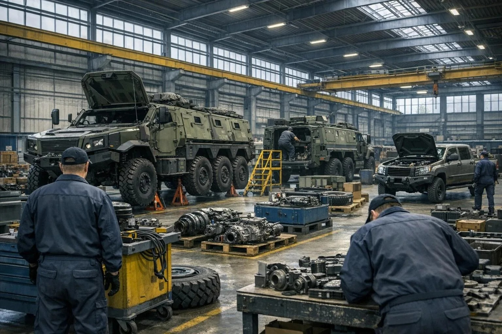
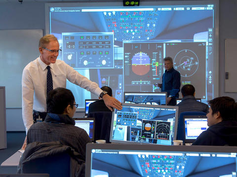
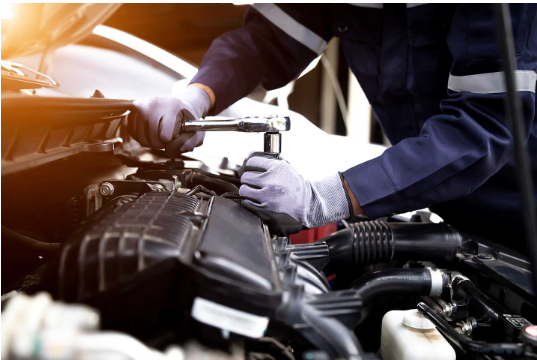
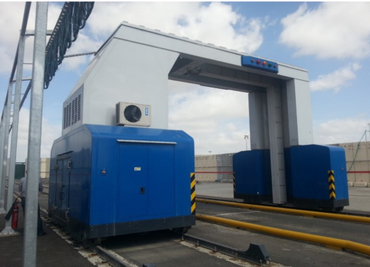
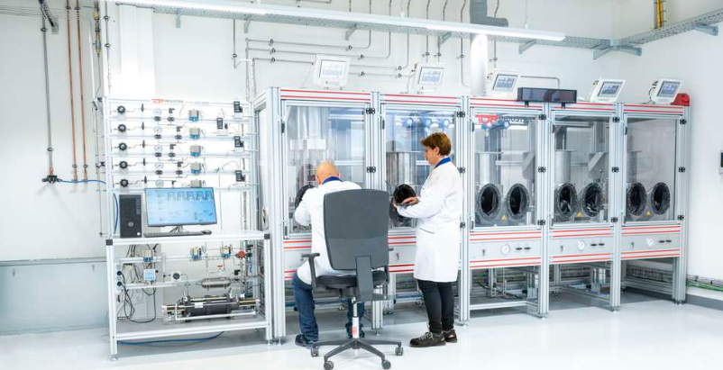
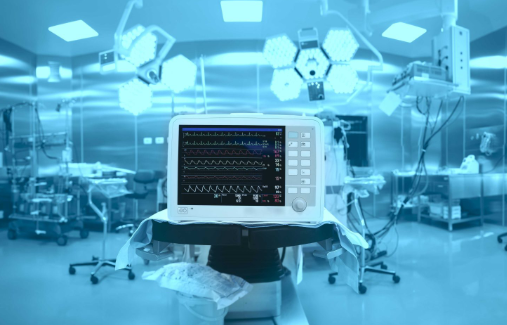

Maintenance & Customer Service
After-sales services for infrastructures and systems in the security, institutional and civilian markets. Our services comprise management, operation and overall maintenance — including service teams at customer sites, emergency teams and repair laboratories up to Level D.

- Maintenance of Military Vehicles
- Maintenance of Simulators & Trainers
- Maintenance of HLS Inspection Systems
- Maintenance of Security Systems
- Maintenance of Test Facilities
- Railway Maintenance
- Power Distribution Systems Maintenance
- Environment Conditioning Systems Maintenance

SimulationSimulators & Training Systems
We ensure the reliable operation of advanced simulators and training platforms that boost user readiness and significantly reduce operational costs. Our on-site support includes laser technologies, communication systems, IT, multimedia and high-end investigation cabins. With exclusive certifications in communications and cryptography, our solutions are fully tested, validated and integrated into real operational training environments.
Request Information →
FleetVehicle Maintenance
We maintain a wide range of vehicles, including SUVs designed for extreme and demanding environments. Our teams operate both in the workshop and at customer sites, delivering preventive maintenance, diagnostics and rapid repairs to ensure continuous performance and mission readiness.
Request Information →
ScreeningHLS Inspection Systems
With more than 20 years of experience, we support a broad variety of screening and inspection systems used for security and customs applications. Fully certified and authorised across multiple manufacturers, we guarantee reliable, continuous and compliant system operation.
Request Information →Security Systems
We offer complete maintenance for air, land and sea security systems, including electronic and mechanical assembly support at Levels A, B and D, reverse engineering for obsolete components, and the operation of advanced test equipment from production through Level D maintenance.
Request Information →Railway Maintenance
We deliver carriage assembly, system integration, retrofitting, component maintenance and painting services. Together with our strategic partners, we offer end-to-end solutions covering unloading, assembly, testing and final delivery.
Request Information →
TestTest Facilities
We maintain hundreds of multidisciplinary test systems, including platforms no longer supported by their original manufacturers. We ensure high availability and full compliance with the strictest quality standards.
Request Information →
MedicalMedical Systems
We provide dependable maintenance for medical equipment in imaging, emergency care and training, ensuring precision, safety and continuity of service.
Request Information →